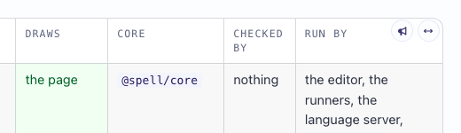

Open Targets and Writers Open the Python Target Open the spell syntax guide Open this epic in the Review tab
Each shows its tooltip where the pointer rests, in VS Code's side bar as in a browser:

Where the table's two buttons sit. A tooltip itself can't be screenshotted headless: Claude checked each button carries its words.
Tell Claude which button showed no tooltip. By Electron's rule (the element right under the pointer must carry the tooltip itself) the table, toolbar, bullhorn and chip buttons pass; the four icons in the page's top bar (the logo, the pencil, <>, the theme) don't, so they may show none: say if they matter.
Open the spell syntax guide (guides/spell-syntax/spell-syntax.html) in VS Code's side bar. Hover a class name's pencil, a purpose's wand, and Expand all / Collapse all in the
toolbar. Then type in a box and hover the round reset that appears beside it. Each should show its tooltip
("Suggest another name for ...", "Provide more details here ...", "Expand all", "Back to ..."). On the core
reference (guides/targets/core-reference.html), open a file's section and hover the round code button in its title: it should show the file's path, and
clicking it should open the source. All of these are now <ui-button>s; headless Playwright
can't show a native tooltip.